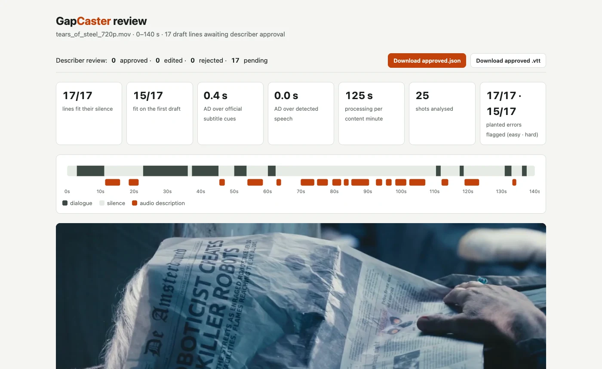

01 / 精選作品
做出來，也經得起檢驗。
六件核心作品。
親自操作，深入檢視。


03 / 更多探索
把好奇心，做成可以體驗的東西。
語音、硬體，以及月球上的一個視角。


04 / 我怎麼做
展示只是開始。
細節，才是關鍵。
我負責系統設計，使用 Claude Code 與 Codex 撰寫大部分程式碼，再親自審查、測試與部署，清楚記錄已量測的結果與尚未驗證的部分。
- 01
先定義邊界。
釐清模型可以決定什麼、程式必須驗證什麼，以及哪些環節由人掌控。
- 02
測試失敗的路徑。
順利完成只是起點。更值得追問的是：工具、伺服器或升級提案出問題時，系統會怎麼處理？
- 03
把驗證紀錄留下來。
公開展示、原始碼與可重現的檢查方式，清楚區分原型結果與正式環境的能力。
05 / 關於我
你好，我是 Ted。
我是在台灣的獨立 AI 工程師，從演算法交易、智慧合約，一路做到 AI 系統。領域持續演進，不變的是：把想法變成可以實際測試的東西。
- 2006
- 開始撰寫演算法交易策略
- 2016
- 開始開發智慧合約
- 2023 →
- 專注 AI 系統
有值得解決的問題？
一起做出
真正有用的東西。
歡迎工程職位、專案合作與技術交流。聊聊你正在解決的問題，以及想做成的事。
在 LinkedIn 聯絡我